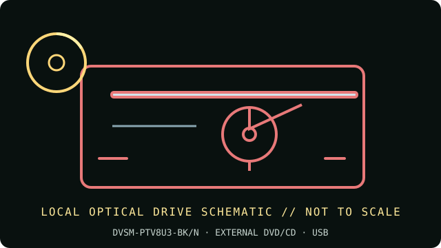

[ INDIVIDUAL COMPONENT // OPTICAL DRIVES ]
Buffalo DVSM-PTV8U3-BK/N Portable DVD Writer
Slim, tray-loading Buffalo portable DVD writer with M-DISC support and a USB boost-cable arrangement. This PTV8U3 SKU is different from the earlier PT58U2 and PL58U2 products.

IDENTIFICATION: Buffalo DVSM-PTV8U3-BK/N · Match the complete label, service code and manual revision before relying on a feature or installing firmware.
Verified specifications
| Catalog subcategory | External DVD writers |
|---|---|
| Exact product identifier | Buffalo DVSM-PTV8U3-BK/N |
| Supported DVD/CD formats | Reads DVD-ROM, DVD±R/RW, DVD±R DL, DVD-RAM, CD-ROM/R/RW and M-DISC; writes DVD±R/RW, DVD±R DL, DVD-RAM, CD-R/RW and M-DISC DVD+R SL. |
| DVD read/write speeds | DVD-ROM/±R/±RW read up to 8×; DVD-RAM read up to 6× and write up to 5×; DVD±R SL write up to 8×; DVD±R DL write up to 6×; DVD+RW up to 8×; DVD-RW up to 6×. |
| CD read/write speeds | CD-ROM/R/RW read up to 24×; CD-R and CD-RW write up to 24×. |
| USB interface and power | USB 3.1 Gen 1 (USB 3.0) Type-A, backward-compatible with USB 2.0; USB bus-powered (maximum 5 W). The included F-shaped boost cable adds a power lead; optional Buffalo AC-DC5 adapter is separate. |
| Compatibility, software and caveats | Buffalo lists Windows and Mac hosts, but bundled CyberLink software is Windows-specific and may be version-limited. On a Mac, confirm software supports the desired burn/playback workflow. Do not assume the USB 3.x interface raises the optical mechanism’s rated speed. |
Use and preservation notes
- Close the tray and keep the drive level during operation; do not disconnect or remove a disc during an active write.
- Use known-good media and a conservative supported speed for archival copies. Finalize as appropriate and read back the disc; retain a checksum and log drive model, firmware, software, media ID and errors.
- Store optical media in protective cases away from heat, direct light, humidity, scratches and adhesive labels. Keep more than one verified copy.
Manufacturer and manual sources
- Buffalo — DVSM-PTV8U3-BK/N official product pageManufacturer specifications, media, interface and accessory notes.
- Buffalo — DVSM-PTV8U3-BK/N manual pageModel-specific manufacturer operating manual and setup documentation.
Advertised maxima are media-dependent drive ratings, not guarantees of a successful burn or recovery from damaged/aged media. Exact host and software support can change by region and operating-system release.